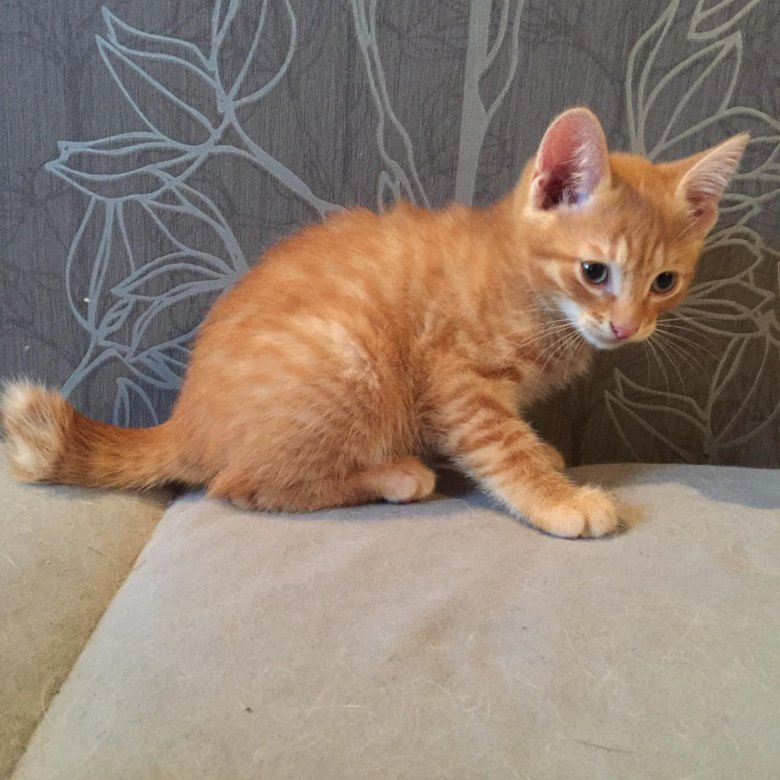

Разновидности:
- гималайская
- тиффани
- нибелунг
Метиска — это помесь нескольких кошачьих пород,
в результате которой котенок получает в наследство
с генами лучшие черты родителей. Смешанная кошка метис
отличается крепким здоровьем, добрым и покладистым характером,
красивым и необычным внешним видом. Что собой представляют?
Метис — это кот или кошка, не имеющие родословной.
Животное является плодом скрещивания между разными породами
либо чистокровного и непородистого родителя.